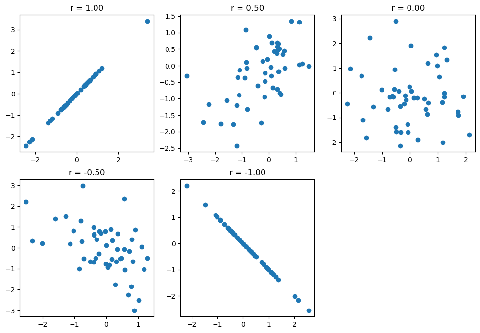

Chapter 10: Quantifying effects and designing studies
Contents
Chapter 10: Quantifying effects and designing studies#
import pandas as pd
import sidetable
import numpy as np
import matplotlib.pyplot as plt
import seaborn as sns
from scipy.stats import norm, t, binom, ttest_ind, bootstrap
import pingouin as pg
import matplotlib
from statsmodels.stats.power import TTestIndPower
import rpy2.robjects as ro
from rpy2.robjects.packages import importr
from rpy2.robjects import pandas2ri
pandas2ri.activate()
from rpy2.robjects.conversion import localconverter
# import NHANES package
base = importr('NHANES')
with localconverter(ro.default_converter + pandas2ri.converter):
NHANES = ro.conversion.rpy2py(ro.r['NHANES'])
NHANES = NHANES.drop_duplicates(subset='ID')
NHANES_adult = NHANES.dropna(subset=['PhysActive', 'Weight', 'BPSysAve', 'Height']).query('Age > 17 and BPSysAve > 0')
rng = np.random.default_rng(1234)
Figure 10.1#
sample_ci = []
sampSize = 250
nsamples = 100
cutoff_lower = t.ppf(0.025, sampSize - 1)
cutoff_upper = t.ppf(0.975, sampSize - 1)
popMean = NHANES_adult.Weight.mean()
for i in range(nsamples):
samp = NHANES_adult.sample(sampSize, random_state=rng).Weight
SEM = samp.std() / np.sqrt(sampSize)
ci_lower = samp.mean() + cutoff_lower * SEM
ci_upper = samp.mean() + cutoff_upper * SEM
sample_ci.append([ci_lower, ci_upper, ci_upper > popMean and ci_lower < popMean ])
sample_ci_df = pd.DataFrame(sample_ci, columns=['ci_lower', 'ci_upper', 'CI captures mean'])
fig = plt.figure(figsize=(12,8))
for i in range(nsamples):
plt.plot([i, i], [sample_ci_df.loc[i, 'ci_lower'], sample_ci_df.loc[i, 'ci_upper']],
color='green' if sample_ci_df.loc[i, 'CI captures mean'] else 'red')
# plt.legend(['True', 'False'], title='CI captures mean')
plt.plot([0, nsamples], [popMean, popMean], color='k', linestyle='dashed')
plt.ylabel('Weight (kg)')
plt.xlabel('samples')
Text(0.5, 0, 'samples')
Figure 10.2#
NHANES_sample = NHANES_adult.sample(sampSize)
meanWeight = NHANES_sample.Weight.mean()
ssDf = pd.DataFrame({'sampSize': [10,20,30,40,50,75,100,200,300,400,500]})
ssDf['meanWeight'] = meanWeight
ssDf['ci_lower'] = t.ppf(0.025, ssDf.sampSize - 1) * NHANES_sample.Weight.std() / np.sqrt(ssDf.sampSize)
ssDf['ci_upper'] = t.ppf(0.975, ssDf.sampSize - 1) * NHANES_sample.Weight.std() / np.sqrt(ssDf.sampSize)
plt.errorbar(x=ssDf.sampSize, y=ssDf.meanWeight, yerr = ssDf[['ci_upper']].values.T)
plt.xlabel("Sample size")
plt.ylabel( "Mean Weight")
Text(0, 0.5, 'Mean Weight')
Bootstrap confidence intervals
bs = bootstrap((NHANES_sample.Weight.values,), statistic=np.mean, method='percentile',
random_state=rng)
bs.confidence_interval
ConfidenceInterval(low=79.26628, high=84.29054000000001)
Figure 10.3#
sns.kdeplot(data=NHANES_sample, x='Height', hue='Gender')
tt = pg.ttest(x=NHANES_sample.query('Gender == "female"').Height,
y=NHANES_sample.query('Gender == "male"').Height,
alternative='greater', correction=True)
tt
| T | dof | alternative | p-val | CI95% | cohen-d | BF10 | power | |
|---|---|---|---|---|---|---|---|---|
| T-test | -14.418093 | 247.518088 | greater | 1.0 | [-14.88, inf] | 1.819621 | 3.201e-32 | 0.0 |
Figure 10.4#
fig, ax = plt.subplots(2, 3, figsize=(12,8))
corrvals = [1,0.5,0,-0.5,-1]
for i in range(2):
for j in range(3):
idx = i * 3 + j
if idx >= len(corrvals):
continue
corr = corrvals[idx]
simdata = np.random.multivariate_normal(
mean=[0, 0],
cov = [[1, corr], [corr, 1]],
size = 50)
ax[i][j].scatter(simdata[:, 0], simdata[:, 1])
ax[i][j].set_title(f'r = {corr:.2f}')
ax[1][2].set_visible(False)

Figure 10.5#
powervals = [(s, e, a) for s in [12, 24, 48, 96] for e in [.2, .5, .8] for a in [0.005, 0.05]]
powerDf = pd.DataFrame(powervals, columns=['sampSizePerGroup', 'effectSize', 'alpha'])
def runPowerSim(sampSizePerGroup, effectSize, alpha, nsims=1000):
p = []
for i in range(nsims):
a = rng.normal(size=sampSizePerGroup)
b = rng.normal(size=sampSizePerGroup) + effectSize
p.append(pg.ttest(x=a, y=b,correction=True)['p-val'][0])
return(np.mean(np.array(p) < alpha))
powerDf['power'] = None
for i in powerDf.index:
powerDf.loc[i, 'power'] = runPowerSim(
powerDf.loc[i, 'sampSizePerGroup'],
powerDf.loc[i, 'effectSize'],
powerDf.loc[i, 'alpha'])
---------------------------------------------------------------------------
KeyboardInterrupt Traceback (most recent call last)
Cell In[7], line 14
12 powerDf['power'] = None
13 for i in powerDf.index:
---> 14 powerDf.loc[i, 'power'] = runPowerSim(
15 powerDf.loc[i, 'sampSizePerGroup'],
16 powerDf.loc[i, 'effectSize'],
17 powerDf.loc[i, 'alpha'])
Cell In[7], line 9, in runPowerSim(sampSizePerGroup, effectSize, alpha, nsims)
7 a = rng.normal(size=sampSizePerGroup)
8 b = rng.normal(size=sampSizePerGroup) + effectSize
----> 9 p.append(pg.ttest(x=a, y=b,correction=True)['p-val'][0])
10 return(np.mean(np.array(p) < alpha))
File /opt/conda/lib/python3.10/site-packages/pingouin/parametric.py:331, in ttest(x, y, paired, alternative, correction, r, confidence)
329 # Convert to dataframe
330 col_order = ["T", "dof", "alternative", "p-val", ci_name, "cohen-d", "BF10", "power"]
--> 331 stats = pd.DataFrame(stats, columns=col_order, index=["T-test"])
332 return _postprocess_dataframe(stats)
File /opt/conda/lib/python3.10/site-packages/pandas/core/frame.py:664, in DataFrame.__init__(self, data, index, columns, dtype, copy)
658 mgr = self._init_mgr(
659 data, axes={"index": index, "columns": columns}, dtype=dtype, copy=copy
660 )
662 elif isinstance(data, dict):
663 # GH#38939 de facto copy defaults to False only in non-dict cases
--> 664 mgr = dict_to_mgr(data, index, columns, dtype=dtype, copy=copy, typ=manager)
665 elif isinstance(data, ma.MaskedArray):
666 import numpy.ma.mrecords as mrecords
File /opt/conda/lib/python3.10/site-packages/pandas/core/internals/construction.py:443, in dict_to_mgr(data, index, columns, dtype, typ, copy)
440 if columns is not None:
441 from pandas.core.series import Series
--> 443 arrays = Series(data, index=columns, dtype=object)
444 missing = arrays.isna()
445 if index is None:
446 # GH10856
447 # raise ValueError if only scalars in dict
File /opt/conda/lib/python3.10/site-packages/pandas/core/series.py:399, in Series.__init__(self, data, index, dtype, name, copy, fastpath)
395 # uncomment the line below when removing the FutureWarning
396 # dtype = np.dtype(object)
398 if index is not None:
--> 399 index = ensure_index(index)
401 if data is None:
402 data = {}
File /opt/conda/lib/python3.10/site-packages/pandas/core/indexes/base.py:7331, in ensure_index(index_like, copy)
7329 return MultiIndex.from_arrays(index_like)
7330 else:
-> 7331 return Index._with_infer(index_like, copy=copy, tupleize_cols=False)
7332 else:
7333 return Index._with_infer(index_like, copy=copy)
File /opt/conda/lib/python3.10/site-packages/pandas/core/indexes/base.py:716, in Index._with_infer(cls, *args, **kwargs)
714 with warnings.catch_warnings():
715 warnings.filterwarnings("ignore", ".*the Index constructor", FutureWarning)
--> 716 result = cls(*args, **kwargs)
718 if result.dtype == _dtype_obj and not result._is_multi:
719 # error: Argument 1 to "maybe_convert_objects" has incompatible type
720 # "Union[ExtensionArray, ndarray[Any, Any]]"; expected
721 # "ndarray[Any, Any]"
722 values = lib.maybe_convert_objects(result._values) # type: ignore[arg-type]
File /opt/conda/lib/python3.10/site-packages/pandas/core/indexes/base.py:572, in Index.__new__(cls, data, dtype, copy, name, tupleize_cols, **kwargs)
568 subarr = _maybe_cast_data_without_dtype(
569 subarr, cast_numeric_deprecated=False
570 )
571 dtype = subarr.dtype
--> 572 return Index(subarr, dtype=dtype, copy=copy, name=name, **kwargs)
File /opt/conda/lib/python3.10/site-packages/pandas/core/indexes/base.py:528, in Index.__new__(cls, data, dtype, copy, name, tupleize_cols, **kwargs)
526 arr = np.asarray(data)
527 else:
--> 528 arr = com.asarray_tuplesafe(data, dtype=_dtype_obj)
530 if dtype is None:
531 arr = _maybe_cast_data_without_dtype(
532 arr, cast_numeric_deprecated=True
533 )
File /opt/conda/lib/python3.10/site-packages/pandas/core/common.py:248, in asarray_tuplesafe(values, dtype)
245 try:
246 with warnings.catch_warnings():
247 # Can remove warning filter once NumPy 1.24 is min version
--> 248 warnings.simplefilter("ignore", np.VisibleDeprecationWarning)
249 result = np.asarray(values, dtype=dtype)
250 except ValueError:
251 # Using try/except since it's more performant than checking is_list_like
252 # over each element
253 # error: Argument 1 to "construct_1d_object_array_from_listlike"
254 # has incompatible type "Iterable[Any]"; expected "Sized"
File /opt/conda/lib/python3.10/warnings.py:179, in simplefilter(action, category, lineno, append)
175 assert action in ("error", "ignore", "always", "default", "module",
176 "once"), "invalid action: %r" % (action,)
177 assert isinstance(lineno, int) and lineno >= 0, \
178 "lineno must be an int >= 0"
--> 179 _add_filter(action, None, category, None, lineno, append=append)
File /opt/conda/lib/python3.10/warnings.py:189, in _add_filter(append, *item)
187 except ValueError:
188 pass
--> 189 filters.insert(0, item)
190 else:
191 if item not in filters:
KeyboardInterrupt:
plt.figure(figsize=(8,8))
sns.lineplot(data=powerDf, x='sampSizePerGroup',
y='power', hue='effectSize', ci=None,
style='alpha', palette='colorblind')
<AxesSubplot:xlabel='sampSizePerGroup', ylabel='power'>

Power analyses#
obj = TTestIndPower()
n = obj.solve_power(effect_size=0.5, alpha=0.05, power=0.8,
ratio=1, alternative='two-sided')
print(f'd = 0.5, n = {n:.2f} in each group')
n = obj.solve_power(effect_size=2, alpha=0.05, power=0.8,
ratio=1, alternative='two-sided')
print(f'd = 2, n = {n:.2f} in each group')
d = 0.5, n = 63.77 in each group
d = 2, n = 5.09 in each group